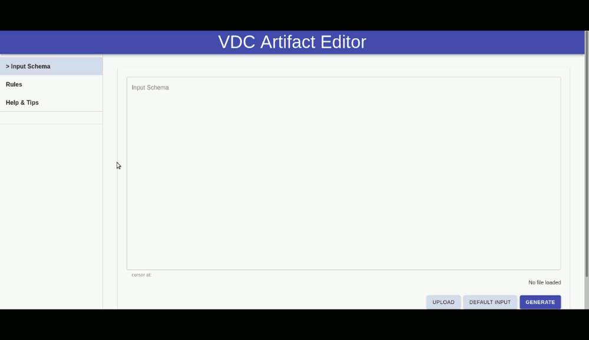

Generic VDC Implementation
Generic Blueprint-Artifact JSON Schema
*You can find, download & view the schema under the “jsonSchemas” folder in the main repository, named “genericSchema.json”*
*Once again, we remind you that you can view the json schema (as well as any other json document) here*
This is a generic approach to the VDC Artefact-Blueprint JSON Schema idea. The following are a more json-oriented view of the section “The VDC Artifact-Blueprint” above, since this section is based on the generic VDC Blueprint. The schema consists four different sections. These sections are:
- General Description
- Pricing Models
- Tech Components
- Service Interface
Both four sections are considered as required fields/objects. Same as before, each section stands as a different json object.
General Description: This is the first section of the VDC Artifact-Blueprint JSON Schema. It is a json object and provides General information to one of the Company's Decision Strategy Makers, usually the one responsible for its vision. It consists of five properties. These are:
- Overview, a json object containing of three properties: Name (string field citing the name of the Artifact-Blueprint), description (string field that contains a short description of the Artifact) and tags (a json array consisting of elements - each element should contain some keywords that describe the functionality of every nested Artifact). All three properties are considered as required to be filled.
- Licensing, a json object that includes Information about the licensing of the service. It consists of three properties, such as libraries (json array including all the libraries used), artifact (json object containing the name, the type and a short description of another artifact that is cited inside our main one) and nested artifacts (json array including short descriptions of any possible artifacts nested - not just cited - inside our main one).
- Compliance, a json array containing all possible cases where the product (VDC) complies and conforms to a policy or law. These cases are including inside Compliance as items (json objects), consisting of their name and (possibly) a short description of theirs.
- Interfaces, a json array that includes detailed information regarding the product’s Input and Output data. Each item in this list shall be a json object, containing an interface name, its input and output properties. All three properties inside each item are required.
- Update Strategy, a json array containing the OS’s upgrade plan for traditional updates, security updates and backports. Each item of the list shall include three properties: Traditional updates, Security updates and Backport fixes. Only the Security updates field/property is considered as required.
Note that all five aforementioned properties are considered as “required” to be filled.
Pricing Models: This is the second section. Similar to all other main sections, its a json object and it describes the pricing model specified, aiming the company’s executive who has primary responsibility for managing it’s finances and all the issues of financial nature. The two main pricing model scenarios (structured in the schema) are:
- Pricing as a structure, a json object that includes the pre-defined fixed price of the VDC. Therefore, it contains one property named ‘fixed price’.
- Pricing as a service, a json object containing information about the pricing of all the individual components inside the VDC. It contains two properties: Fixed price, where the total amount is stated, and pricing function, which includes several pricing factors based on the individual components. Pricing function’s property will be a json array of these factors (some factors could be time, number of hits, or something else).
The Pricing Models section must contain any of the two models above.
Tech Components: This is the third Schema section. As a json object, it refers to the company’s executive whose main/primary focus is on scientific and technological issues within the organization. It has two properties, which are:
- Technological details, one of the most important properties of the Schema. It is a json object and it includes all the technological information that define the VDC. It consists of nine properties. All nine are required to be filled. These are:
- OS, a json object citing information about the Operating System. Its two attributes are the OS’s host and the distribution.
- Kernel, a json object containing al the kernel modules. It consists of a json array, where all the modules are cited as items.
- Tech Overview, a json object. It contains a json array with all the tech modules of the VDC. Each item (module) inside the array has attributes such as its module name (required), its sensitivity level, its versioning libraries, its scalability, its limitations, as well as its supporting databases.
- Deployment, a json object containing vital information of the deployment phase. Its two properties are dependencies (json array with each item being a module/dependency) and sequence (json array where each item is a specific sequence of modules, identified by their module_names as these have been defined in the tech_overview.modules field). Only the sequence is a required field.
- Cookbooks, a json array consisting of items. Each item includes two properties, the module name (as this has been defined in the tech_overview.modules field) and the script (the URI to the cookbook script file for each module).
- Artifact orchestration tools, a string field which shall contain one of the following: IBM Cloud Orchestrator, Microsoft Azure Cost Management, Morpheus, CloudBolt, Embotics, RightScale, OpenStack, BMC Cloud Lifecycle Management or vRealize Suite.
- Selinux, a json object containing one boolean field that indicates whether SELINUX is enabled in the VDC or not.
- Vtpm, same as above, a json object containing a boolean field that indicates whether vTPM is used in the VDC or not.
- Protocol standards, a json array containing two standards, Spiffe and Json Web Token. Each standard includes a boolean field that indicated whether the particular standard is used in the VDC or not.
- Cookbook type, a string field containing only the value of the cookbook type specified. This field should be choosed among a pre-defined list of cookbook type values.
Service Interface: This is the fourth and final section of the generic VDC Artifact-Blueprint JSON Schema. It is a json object and refers to the company’s developers. It consists of five properties and these are:
- Junit Tests, a json array containing all the junit tests for each module. Each array item must include the module name (as this has been defined in the Cookbook_Appendix.tech_overview.modules field) and the junit test.
- Input/Output, a json array consisting of example data for the input/output of each interface, as these have been defined in the General_Description.Interfaces field. Each array item must cite the interface name, an input example and an output example.
- Tuples, a json array that includes all the information needed for the developers to understand which tuples are contained in each cookbook. Each array item must contain the tuple’s name and information regarding it.
- API, once again, a json array. It includes additional metadata for each interface as these have been defined in the General_Description.Interfaces field. Each array item must include the interface name, the path (a relative path to an individual endpoint, beginning with a slash) and the operation type (could be one of: get, put, post, delete, head, patch).
- Servers, again, a json array. It includes all the servers’ endpoints that are used from the VDC. Each array item consists of one url that leads to a server.
All five aforementioned properties are considered as “required” to be filled.
Generic VDC Artifact-Blueprint Editor
The VDC Artifact-Blueprint Editor has been developed based on the Generic Artifact-Blueprint JSON schema analysed above. It’s implementation took full advantage of JavaScript’s React open source library. You can find the full code of the editor, as well as the installation (& deployment) instructions, here. The editor is available for use and testing by clicking here. Through the VDC Artifact-Blueprint editor, one can create and generate his/her own VDC Blueprint JSON schema, or make modifications on the original one (the Generic Blueprint schema). If one understands the Generic schema explained in the previous paragraphs, the use of the editor will be extremely easy. The editor implementation has passed multiple quality tests and will suit every VDC owner’s (that is, one that wishes to create a JSON schema for his model) needs. As stated before, the editor is structured using React. Therefore, any developer who wants to get into the coding part of the editor, will have to be experienced in JavaScript and the language’s libraries. Here is a brief introduction to the editor’s user interface, through the following GIF:
